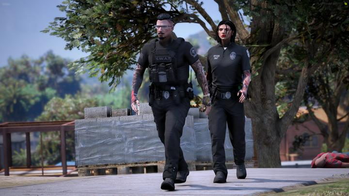
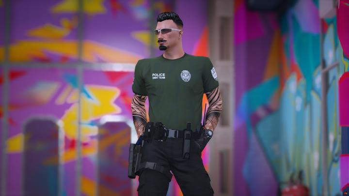
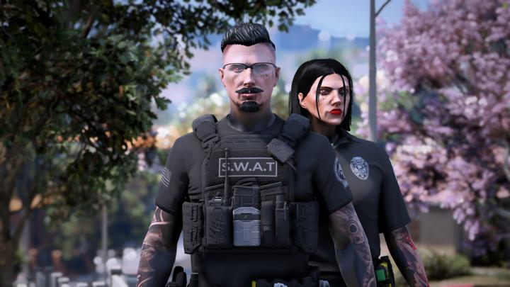
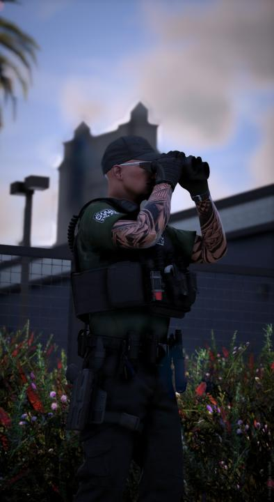

Uso internoLettura obbligatoria9 capitoli · 10 esami
MANUALE OPERATIVO LSPD · NOW RP · AGGIORNATO AL 14/11/2026
ManualeOperativo
Dipartimento · Procedure · Codici · Disciplina
Il Dipartimento di Polizia di Los Santos si impegna a proteggere la vita, i beni e i diritti dei cittadini, mantenendo l'ordine pubblico e facendo rispettare la legge con professionalità, responsabilità e con la trasparenza più assoluta.
Tocca Segna come letto alla fine di ogni articolo: i progressi restano salvati su questo dispositivo. Alla fine di ogni capitolo trovi la sua verifica.
0%letto
I
Capitolo primo
Introduzione al LSPD
ART. 1.1Missione e valori
Il Dipartimento di Polizia di Los Santos (LSPD) si impegna a proteggere la vita, i beni e i diritti dei cittadini, mantenendo l'ordine pubblico e facendo rispettare la legge con professionalità, responsabilità e con la trasparenza più assoluta.
Valori fondamentali
Rispetto: agire sempre con onestà e rispetto.
Disciplina: rispettare regole e ordini in ogni momento.
Responsabilità: essere consapevoli del proprio ruolo.
Coraggio: affrontare ogni situazione con determinazione.

Pattuglia LSPD in servizio
ART. 1.2Gerarchia e struttura interna
L'LSPD è organizzato secondo una catena di comando gerarchica, dove ogni grado ha ruoli e responsabilità ben definiti. Rispettare questa struttura è essenziale per garantire disciplina, ordine e operatività.
L'Alto Comando rappresenta il vertice del Dipartimento: prende le decisioni strategiche, gestisce l'organizzazione interna e garantisce il corretto funzionamento dell'intero corpo.
Gli Ufficiali, come Capitani e Tenenti, coordinano le operazioni sul campo, supervisionano gli agenti e assicurano che le direttive del comando vengano applicate.
I Sottufficiali supervisionano la truppa e garantiscono il corretto svolgimento delle operazioni, coordinando gli agenti sul campo e assicurando il rispetto delle procedure.
La Truppa è composta dagli agenti operativi: il personale in prima linea incaricato di pattugliamenti, controlli, arresti e interventi sul territorio.
L'Accademia è il centro di formazione del dipartimento, dove le reclute ricevono l'addestramento teorico e pratico necessario per diventare agenti.
ART. 1.3Divisioni e abilitazioni operative
Divisione
Compito
PATROL DIVISION
Controllo stradale e interventi urbani.
S.W.A.T.
Interventi ad alto rischio.
C.I.D.
Investigazioni e crimini complessi.
H.R.
Human Resource: assunzioni, carriere e istruzione.
H.S.U.
Intercettazione e inseguimenti di veicoli.
MARY
Pattugliamento con utilizzo di motocicli.
A.S.D.
Supporto al pattugliamento con elicotteri.
ART. 1.4Codice di condotta e deontologia
Tutti gli agenti del dipartimento devono mantenere un comportamento professionale, etico e rispettoso, sia in servizio che fuori servizio. È fondamentale agire con imparzialità, onestà e integrità, evitando qualsiasi forma di abuso di potere o discriminazione.
Il rispetto delle leggi e delle procedure interne è obbligatorio, così come la tutela della privacy e dei diritti dei cittadini.
ATTENZIONE
Le violazioni del codice possono comportare sanzioni disciplinari, fino al licenziamento.
ART. 1.5Iter di progressione professionale
Per ogni promozione vengono valutati diversi fattori chiave:
l'anzianità di servizio;
il rispetto delle regole disciplinari, considerando eventuali note o infrazioni;
la corretta esecuzione di tutti gli iter operativi (rapporti, arresti, procedure);
l'atteggiamento dimostrato sul campo.
Questi elementi insieme determinano l'idoneità del candidato a ricoprire ruoli di maggiore responsabilità.
NOTA
Se tutte le valutazioni operative e disciplinari risultano positive, le revisioni per la progressione di grado per anzianità si fanno con cadenza minima di due settimane (14 giorni) dall'ultima promozione conseguita.
II
Capitolo secondo
Regole generali e di comportamento
ART. 2.1Linguaggio e atteggiamento in servizio
Durante il servizio, ogni agente deve mantenere un linguaggio professionale, chiaro e rispettoso, evitando espressioni offensive o inappropriate.
L'atteggiamento deve essere calmo, autorevole e imparziale, dimostrando controllo emotivo anche nelle situazioni più difficili. Il comportamento corretto rafforza la fiducia della comunità e facilita la gestione degli interventi.
ART. 2.2Uso corretto delle comunicazioni radio
Le comunicazioni radio devono essere chiare, concise e professionali. È fondamentale usare il linguaggio codificato del dipartimento con i tre Macro Codici (TEN Codes, STATUS Codes e CAR Codes), evitare distrazioni o conversazioni non pertinenti e trasmettere solo informazioni rilevanti e urgenti.
Un uso corretto garantisce efficienza, sicurezza e coordinamento durante le operazioni. I codici sono all'art. 5.1.
ART. 2.3Presenza e puntualità
Gli agenti devono garantire la propria presenza regolare e rispettare gli orari di servizio con puntualità: è fondamentale per l'efficienza operativa e per una copertura continua delle attività di polizia.
Ritardi o assenze ingiustificate possono compromettere il lavoro di squadra e comportare sanzioni disciplinari.
OBBLIGO
Un'assenza di più di tre giorni senza avviso nella sezione «Ferie» può portare a sanzioni disciplinari.
ART. 2.4Reportistica e completamento
I rapporti devono essere compilati seguendo i template in modo completo e accurato. In caso di mancata compilazione, l'operatore responsabile è soggetto a sanzioni disciplinari.
ART. 2.5Comportamento fuori servizio
Anche fuori servizio gli agenti devono comportarsi in modo responsabile, per non compromettere la reputazione del dipartimento. Ogni poliziotto rappresenta l'LSPD in ogni momento: comportamenti scorretti possono portare a sanzioni disciplinari.
ART. 2.6Sanzioni per condotta scorretta
Le violazioni vengono sanzionate in modo proporzionato:
1RichiamoVerbale o scritto, per infrazioni leggere
2Servizio deskCompiti amministrativi e limitazioni operative
3SospensioneTemporanea dal servizio, per violazioni gravi
4RetrogradazionePer condotte estremamente gravi
5LicenziamentoPer condotte estremamente gravi
ART. 2.7Procedura di segnalazione interna
Ogni agente che osserva violazioni o comportamenti scorretti deve seguire la procedura di segnalazione interna.
VIETATO
Farsi giustizieri o punire personalmente i colleghi trasgressori: ogni intervento disciplinare spetta esclusivamente alle Risorse Umane o ai sottufficiali in su, per garantire correttezza e imparzialità.
La segnalazione deve includere
dati dell'operatore che segnala;
orario e data dell'evento;
bodycam dell'accaduto;
descrizione dettagliata dell'accaduto.
Si inoltra alle Risorse Umane tramite ticket.
ART. 2.8Rispetto del ruolo
Essere un agente del LSPD significa molto più che indossare una divisa: implica assumersi una responsabilità verso la comunità, verso i colleghi e verso se stessi. Ogni poliziotto rappresenta l'autorità, la legge e i valori del dipartimento.
Rispettare il ruolo significa comprendere il peso delle proprie azioni, seguire la gerarchia e le direttive dei superiori o del Coordinatore, collaborare con i colleghi senza interferire indebitamente nelle loro operazioni e agire sempre secondo protocolli e procedure ufficiali.
Disciplina, correttezza e imparzialità non sono semplici obblighi, ma pilastri che garantiscono fiducia e rispetto nella comunità.
ATTENZIONE
Il mancato rispetto del ruolo può comportare richiami, servizio desk o provvedimenti disciplinari, e mina la credibilità dell'intero dipartimento.
ART. 2.9Tatuaggi, capelli ed estetica
Tatuaggi: consentiti, purché non coprano il volto e non presentino segni, simboli o riferimenti riconducibili a organizzazioni criminali.
Capelli: ordinati e conformi al decoro della divisa, evitando colori non naturali o stili non appropriati al servizio.
III
Capitolo terzo
Equipaggiamento e mezzi
ART. 3.1Equipaggiamento
Gli agenti ricevono una dotazione standard per essere totalmente operativi e pronti a ogni evenienza in campo.
👮 Divisa ufficiale⭐ Distintivo⚡ Taser🔫 Pistola d'ordinanza e caricatori🎒 Fondina e cinturone tattico📱 Tablet MDT🎥 Bodycam📻 Radio🔦 Torcia🪵 Manganello🛡 GAP (giubbotto antiproiettile)🩹 Kit di primo soccorso
ART. 3.2Arma d'ordinanza
Gli agenti utilizzano unicamente l'arma d'ordinanza fornita dall'armeria della centrale LSPD.
VIETATO
Portare o impiegare armi non in dotazione alla polizia o di provenienza dubbia. La violazione comporta gravi sanzioni disciplinari.
NOTA
Se l'arma d'ordinanza ha problemi o malfunzionamenti, l'agente avvisa subito i sottufficiali in servizio o i superiori, che la sostituiscono.
ART. 3.3Utilizzo del panic button
Il Panic Button è in dotazione alle forze dell'ordine e va tenuto sempre con sé, in tasca. Si usa esclusivamente in situazioni di emergenza reale: per esempio quando l'agente è in pericolo di vita o non può comunicare via radio.
Una volta attivato invia automaticamente una segnalazione a tutte le unità operative, con la posizione esatta dell'agente, permettendo un intervento immediato e coordinato.
VIETATO
L'uso improprio o ingiustificato del Panic Button: può comportare provvedimenti disciplinari.
OBBLIGO
Dopo l'attivazione, una volta ristabilita la sicurezza, l'agente spiega e relaziona l'accaduto.
IV
Capitolo quarto
Procedure operative
ART. 4.1Procedure sul campo e gestione delle minacce
Ogni intervento segue protocolli precisi per garantire legalità, sicurezza e coerenza. L'impiego di qualsiasi arma deve essere proporzionato alla minaccia.
Riconoscere la situazione di pericolo.
Chiamare supporto.
Mettere in sicurezza l'area.
Valutare il rischio.
Agire con forza proporzionata.
ART. 4.2Controlli stradali e identificazione
Gli agenti fermano i veicoli in modo sicuro, identificano correttamente conducenti e passeggeri e verificano documenti e precedenti.
ART. 4.3Interventi su chiamata
Le chiamate sono gestite soprattutto dagli agenti coordinatori in servizio, che indicano alle ADAM sul campo dove convergere e con quanti operatori intervenire.
VIETATO
Le Reclute non possono rispondere alle chiamate d'emergenza, né uscire in pattuglia da sole o in coppia con un'altra Recluta.
OBBLIGO DI AFFIANCAMENTO
La Recluta prende servizio esterno solo se affiancata da un operatore di grado pari o superiore ad Agente I (preferibilmente un Agente III+1, un Istruttore o un Sottufficiale), che ne assume la supervisione diretta.
ART. 4.4Utilizzo dell'arma da fuoco
VIETATO
Aprire il fuoco per primi.
L'uso dell'arma da fuoco è consentito solo:
in caso di pericolo di vita per l'operatore o per i civili;
durante operazioni di blitz autorizzate;
per fermare la fuga di un soggetto su veicolo, limitatamente a colpi alle ruote.
In ogni caso l'impiego dell'arma deve essere proporzionato alla minaccia.
ART. 4.5Codice penale e uso della centrale
Per fermi e arresti si consulta la centrale operativa per verifiche e inserimenti, e si applicano correttamente le violazioni in base al codice penale o civile.
ART. 4.6Procedura di arresto e Miranda Warning
Il soggetto si mette in stato di arresto solo dopo aver letto il Miranda Warning, prima dell'entrata in centrale LSPD.
Foto segnaletica con nome e cognome sull'applicativo, sezione FOTO SEGNALETICHE.
Trasferimento al carcere di Bolingbroke.
Arresto definitivo con inserimento del tempo di pena e dei reati.
Miranda Warning
La dichiaro in stato d'arresto, ha il diritto di rimanere in silenzio.
Qualsiasi cosa dirà o farà potrà essere usata contro di lei in tribunale.
Ha diritto ad un avvocato: se non se ne può permettere uno, gliene sarà assegnato uno d'ufficio.
Ha compreso i suoi diritti?
NOTA
I diritti si leggono almeno una volta al momento dell'arresto preventivo e il sospettato risponde «Sì» se li ha compresi. Si possono ripetere se non li ha davvero compresi, ma non è obbligatorio rileggerli più volte se non collabora. Non si applicano ulteriori reati a chi finge di non capire.
ART. 4.7Procedura di perquisizione
La perquisizione senza mandato è consentita solo quando gli operatori hanno una forte presunzione che nel veicolo o addosso al soggetto ci siano armi, munizioni, droga o esplosivi, oppure che il soggetto sia mascherato.
Se la perquisizione ha esito positivo, l'operatore può procedere con un sequestro temporaneo, che va poi convalidato dal procuratore con un mandato.
NOTA
Dal livello DEFCON 3 in su le perquisizioni dei cittadini sono consentite durante i fermi o in qualsiasi momento, se ritenute necessarie.
ART. 4.8Contrattazione ostaggi, rapine e ostaggi
Una richiesta di contrattazione per ostaggi va comunicata al superiore più alto in grado disponibile in quel momento.
All'arrivo si mette in sicurezza l'area bloccando ogni via di fuga.
Con ostaggi: si avvia la negoziazione e si soddisfano le richieste necessarie per proteggerne l'incolumità.
Senza ostaggi: si impedisce la fuga e si intima la resa; in caso di rifiuto si procede con l'irruzione.
PRIORITÀ
Rapine a Fleeca Bank, Blaine County Bank, Gioielleria Vangelico e Pacific Standard Bank: priorità S.W.A.T. (art. 5.3).
ART. 4.9Bodycam e prove
Le prove servono alla procura e al giudice per classificare realmente un reato: senza di esse gli arresti non sono leciti.
OBBLIGO
Avere una bodycam efficiente e operativa. Le prove si conservano per un massimo di 48 ore dall'arresto.
ATTENZIONE
Se la bodycam non è disponibile, per qualsiasi ragione, si va incontro a sanzioni gravi.
ART. 4.10Utilizzo di maschere
Le maschere che coprono il volto in servizio sono riservate esclusivamente ai reparti C.I.D. e S.W.A.T.. Il personale dell'investigativa può svolgere le proprie funzioni anche indossando la maschera.
VIETATO
A chi non appartiene a C.I.D. o S.W.A.T., salvo eccezioni specificamente autorizzate.
ART. 4.11Sanzioni massime e cumulo dei reati
Voce
Limite
Sanzione pecuniaria in un arresto
Massimo $25.000,00
Detenzione
Massimo 8 mesi (8 minuti effettivi). Le pene detentive sono cumulabili.
Codice della strada
Massimo $25.000,00, indipendentemente dal numero di infrazioni
Cumulo dei reati di classe C e B
I reati di classe C e B si sommano fino a un massimo di cinque: raggiunto il limite, il cumulo equivale a un reato di classe superiore.
B + B + B + B + B = un reato di classe A.
C + C + C + C + C = un reato di classe B.
I reati di classe D sono solo illeciti amministrativi, non penali.
ART. 4.12Identificazione dei cittadini
Quando un agente ferma una persona, a bordo di un veicolo o in arresto, deve sempre riconoscerne l'identità.
La prima modalità è sempre la richiesta del documento d'identità cartaceo: se il cittadino lo esibisce, è valido e sufficiente.
Solo se il documento cartaceo manca si procede, obbligatoriamente, all'identificazione tramite impronta digitale con l'apposito tablet.
VIETATO
Chiedere l'impronta digitale sul tablet se il documento cartaceo è presente e regolarmente fornito.
V
Capitolo quinto
Codici e comunicazioni
ART. 5.1Codici radio · Macro codici
I TEN Codes, i CAR Codes e gli STATUS Codes sono un sistema di comunicazione rapido e standardizzato, chiamati insieme «Macro Codici».
TEN codes
Codice
Significato
Tipo
Codici d'emergenza
Codice
Significato
Sirene
Lampeggianti
Codice 0
Emergenza massima: attacco alle istituzioni, convergere in Codice 3
Sì
Sì
Codice 1
Possibile situazione di pericolo
No
No
Codice 2
Possibile situazione di pericolo
No
Sì
Codice 3
Situazione di pericolo accertato
Sì
Sì
Codice 4
Situazione sotto controllo
—
—
Status ADAM
Status
Significato
Status 1
Pattuglia disponibile (10-50, pattugliamento)
Status 2
Pattuglia impegnata in operazione
Status 3
Pattuglia non disponibile (10-80, 10-60…)
Status 4
Pattuglia in rientro con sospettati
ART. 5.2Nomenclatura delle pattuglie
Le volanti di una ADAM in servizio
ADAM
Unità base da due agenti, fino a un massimo di tre. Pattugliamenti standard e chiamate di routine.
LINCOLN
Alto Comando o Ufficiali in pattuglia: attenzione al loro GPS. Funzioni gestionali della truppa o logistiche.
C.O.M.M.A.
Coordinatore Operativo Mobile in Missione e Assistenza: pattuglia guidata da un coordinatore o supervisore, controlla e coordina la truppa sul campo.
DAVID
Pattuglia tattica S.W.A.T.: interventi ad alto rischio, convogli blindati, almeno due ADAM di supporto e un blindato.
MARY
Unità motociclistica: interventi rapidi, controllo del traffico e inseguimenti agili.
SPEED
High Speed Unit: inseguimenti ad alta velocità e corse clandestine.
NAVY
Imbarcazioni della divisione marina: pattugliamenti costieri, portuali e fluviali.
EAGLE
Unità aeree: supporto visivo dall'alto e assistenza tattica.
ART. 5.3Priorità delle chiamate
In specifiche situazioni ad alto rischio la S.W.A.T. ha priorità operativa assoluta: esclusivamente nei blitz o negli interventi presso Fleeca Bank, Blaine County Bank, Gioielleria Vangelico e Pacific Standard Bank, e negli arresti mirati di sospettati ricercati.
Le altre unità supportano, ma agiscono solo su coordinamento S.W.A.T.; il C.I.D. interviene per eventuali investigazioni.
ART. 5.4Coordinamento con altri reparti
Ogni unità ha competenze specifiche, ma tutte agiscono in sinergia seguendo le direttive del coordinatore, che gestisce la scena e assegna i compiti.
ADAM: primo livello di intervento, mantengono il controllo iniziale fino all'arrivo dei rinforzi.
LINCOLN: supervisione e supporto tattico.
S.W.A.T.: priorità nelle situazioni ad alto rischio (rapine, blitz, arresti di soggetti pericolosi); le altre unità supportano su sua indicazione e del coordinatore.
MARY: interventi rapidi e inseguimenti urbani. SPEED: scenari ad ampio raggio, soprattutto in autostrada.
EAGLE: sorveglianza aerea e tracciamento dall'alto. NAVY: ambito marino, costiero o fluviale.
ART. 5.5Procedure di intervento e gestione
Ogni intervento si classifica in base alla gravità; il coordinatore valuta le priorità e assegna le unità più adatte.
Rischio basso
Piccoli furti, disturbo, controlli di routine. Pattuglie ADAM o LINCOLN.
Rischio medio
Inseguimenti, sospetti armati, soggetti pericolosi non confermati. Anche MARY, SPEED ed eventualmente EAGLE.
Rischio alto
Rapine in corso, ostaggi, ricercati confermati, attacchi organizzati. Priorità S.W.A.T. con tutte le unità sotto coordinamento centrale.
ART. 5.6Insubordinazione al coordinamento
L'insubordinazione verso il coordinatore compromette la sicurezza e l'efficacia delle operazioni: la disobbedienza causa confusione e ritardi e mette a rischio vite. Tutti seguono le direttive con disciplina e collaborazione.
ATTENZIONE
In caso di insubordinazione grave si applicano sanzioni disciplinari, fino alla sospensione dal servizio.
VI
Capitolo sesto
Formazione, procedure e disciplina
ART. 6.1Formazione delle reclute

Un agente all'addestramento
La formazione è gestita dalle Risorse Umane (H.R.) e prepara le reclute con addestramento pratico, lezioni teoriche e simulazioni.
Per diventare agente la recluta deve
ottenere quattro rapporti di pattuglia;
essere presente ad almeno due lezioni teoriche e una lezione pratica;
aver maturato almeno cinque giorni di servizio attivo da recluta.
ART. 6.2Formazione dei sergenti
Per accedere al grado di Sergente bisogna aver ricoperto il grado di Agente III per almeno due settimane, affiancati da Agenti III+1 con maggiore anzianità sul campo.
Solo chi dimostra capacità eccellenti nel coordinare le squadre può chiedere di sostenere l'esame per l'avanzamento a Sergente.
ART. 6.3Interazione civile e controllo del territorio
Nei contatti con i civili ogni agente mantiene un comportamento rispettoso e professionale, puntando a risolvere le situazioni senza uso della forza, se non strettamente necessario.
Pattugliamenti regolari e visibili prevengono i reati e garantiscono sicurezza: gli agenti monitorano le aree a rischio e intervengono tempestivamente. Gli agenti coordinatori mantengono la città il più coperta possibile.
ART. 6.4Procedure di sicurezza
Radio usata in modo corretto: comunicazioni brevi, chiare e in codice, senza interferenze superflue.
Segnalare costantemente la propria posizione, soprattutto durante inseguimenti o situazioni di pericolo.
Nessun agente agisce da solo senza aver prima informato il comando e richiesto supporto, quando necessario.
Armi sempre controllate e in sicurezza, con la sicura inserita fino all'ordine di impiegarle, soprattutto nei fermi stradali.
VIETATO
Estrarre le armi d'ordinanza senza una valida e comprovata motivazione operativa.
ART. 6.5Manovre operative
Manovra «T»
La pattuglia si mette di traverso davanti al veicolo sospetto, formando una «T».
«Double T»
Versione rinforzata: due pattuglie bloccano insieme il veicolo, una frontalmente e una lateralmente.
Manovra «BOX»
Accerchiamento totale del veicolo con più unità: davanti, dietro e ai lati.
Manovra «PIT»
Urto controllato nella parte posteriore del veicolo per fargli perdere aderenza e fermarlo.
Strada
Velocità massima
Autostrade
160 km/h
Strade extraurbane
100 km/h
Quando si può fare la PIT
Solo fuori dall'ambiente urbano e solo sulle auto (no moto o altri veicoli).
Solo dopo eventuali danni causati dal sospetto alla guida.
Dopo tre minuti di inseguimento con tre ALT, uno al minuto.
Si notificano al coordinatore o al superiore posizione esatta e velocità: è lui a confermare la manovra.
VII
Capitolo settimo
Prove, PDA e codice penale
ART. 7.1Prove investigative
In caso di gravi reati o ritrovamenti rilevanti (grandi quantità di droga, armi da fuoco, refurtiva di valore) le prove vanno segnalate subito e consegnate al C.I.D., che ne cura gestione e custodia.
VIETATO
Trattenere o manomettere reperti.
ART. 7.2Rilascio del PDA (porto d'armi)
Il PDA è l'autorizzazione legale a portare con sé armi da fuoco per difesa personale, rilasciata dopo le verifiche su requisiti e idoneità. Costo: $10.000.
Requisiti minimi
Aver superato la maggiore età.
Fedina penale pulita.
Visita medica certificata.
Certificato balistico.
Procedura
Rilasciare il documento cartaceo.
Segnare il rilascio sull'MDT di servizio, nelle note del cittadino.
Nota da scrivere sull'MDT
In data odierna (inserire data) si rilascia il PDA con validità di un mese, con scadenza fissata al (inserire data), fatta salva l'eventuale revoca anticipata nei casi previsti dalla normativa vigente.
ART. 7.3Classificazione dei reati, sanzioni e pene
La classificazione distingue i reati in base alla gravità e alle conseguenze: si consultano tutti nel codice penale e civile di Los Santos.
Le sanzioni le stabiliscono gli agenti coinvolti nell'arresto.
Se i sospettati collaborano si possono dare sconti di pena detentiva al carcere di Bolingbroke.
Se un legale chiede uno sconto di pena detentiva e pecuniaria, si consulta un sottufficiale in su.
ART. 7.4Bodycam e prove nell'arresto
La bodycam o le prove che immortalano il sospettato durante il reato sono la conferma effettiva per arrestarlo (vedi art. 4.9).
OBBLIGO
Le prove video restano disponibili per un massimo di 48 ore dall'arresto. Se non lo sono, per motivi non congrui al dipartimento, si incorre in sanzioni disciplinari gravi.
VIII
Capitolo ottavo
Reparti speciali
ART. 8.1S.W.A.T. · Special Weapons and Tactics
Il reparto S.W.A.T. è responsabile delle operazioni ad alto rischio: arresti di soggetti pericolosi, irruzioni in edifici con ostaggi, rapine e interventi su minacce gravi.

Operatori S.W.A.T. in tenuta tattica
NOTA
Si può partecipare al bando S.W.A.T. dal grado di Agente II.
Comandante S.W.A.T.Massima autorità del reparto: pianificazione strategica, logistica, supervisione di tutte le operazioni, gestione delle nuove leve e conferma delle promozioni interne.
Direttore S.W.A.T.Secondo in comando: decisioni operative e strategiche, leadership in assenza del Comandante, gestione del roster, approvazione delle promozioni e pianificazione delle tattiche.
Supervisore S.W.A.T.Logistica delle missioni, supervisione degli operatori e dei protocolli, valutazione delle missioni ad alto rischio, formazione pratica avanzata e approvazione delle promozioni.
Istruttore S.W.A.T.Seleziona, allena e aggiorna nuove leve e operatori: addestramento tattico, uso delle armi e simulazioni.
Operatore Scelto S.W.A.T.Operatore esperto riconosciuto per anzianità con encomi, punto di riferimento nelle missioni complesse.
Operatore S.W.A.T.Operatore ufficiale del reparto: partecipa a tutte le operazioni e segue le direttive dei superiori.
Operatore in prova S.W.A.T.Nuovo membro, in prova per due settimane tra corsi, test pratici e valutazioni continue.
ART. 8.2C.I.D. · Criminal Investigation Division

Attività di osservazione
Il C.I.D. indaga sui crimini complessi e gravi: omicidi, rapine, frodi, traffico di droga e altre attività criminali organizzate, con analisi delle prove e strategie operative mirate.
Detective SeniorCapo reparto: supervisiona tutte le indagini, pianifica i casi, valuta le prove più complesse, assegna i compiti, coordina con altre agenzie e cura la formazione.
Detective IIIInvestigatore avanzato: gestisce in autonomia casi di media complessità, coordina Detective II e I, conduce interrogatori complessi.
Detective IIInvestigatore intermedio: raccoglie prove, segue sospetti e coordina alcune fasi operative sotto supervisione.
Detective IInvestigatore junior: assiste i colleghi più esperti, raccoglie informazioni preliminari e documenta le prove.
IX
Capitolo nono
DEFCON · Livelli di allerta
ART. 9.1I livelli DEFCON
Il DEFCON regola lo stato di operatività delle forze dell'ordine in base al livello di minaccia in città. Va dal DEFCON 5 (normalità) al DEFCON 1 (stato di guerra). Ogni grado stabilisce armi, equipaggiamento, veicoli e numero minimo di operatori per pattuglia. Tocca un livello per vederlo.
Nessun articolo contiene questa parola. Prova con un termine più breve.
Consultazione rapida
Strumenti operativi
Quello che serve durante il turno, senza cercare nel manuale: codici radio, checklist degli interventi, carriera e domande frequenti.
TEN codes Cerca e filtra
Codice
Significato
Tipo
Allenamento Indovina il significato, poi gira la carta
Spunta i passi mentre li fai. Ogni scheda rimanda all'articolo completo del manuale.
Il percorso di un agente LSPD grado per grado, secondo gli articoli 1.5, 6.1 e 6.2 del manuale.
Reclutamento
Bandi e candidature
I bandi dell'LSPD si pubblicano solo qui. Le candidature si inviano dal sito e arrivano direttamente al Comando; l'esito compare qui, nella pagina Bandi.
1Leggi il bandoRequisiti e scadenze
2Studia il manualeLe verifiche di capitolo aiutano
3Candidatura onlineArriva subito al Comando
4Colloquio H.R.Con le Risorse Umane
5AccademiaDa Recluta ad Agente I
Allenamento LSPD
Centro esami
Ogni verifica pesca le domande a caso e mescola le risposte. Hai un tempo limite, le risposte giuste si vedono solo alla consegna e le uscite dalla pagina vengono registrate, come in un esame vero.
Una per capitolo
Verifiche di capitolo
Risorse Umane · H.R.
Accademia LSPD
Lezioni, requisiti e percorso per passare da Recluta ad Agente I. Sezione riservata al personale del Dipartimento.